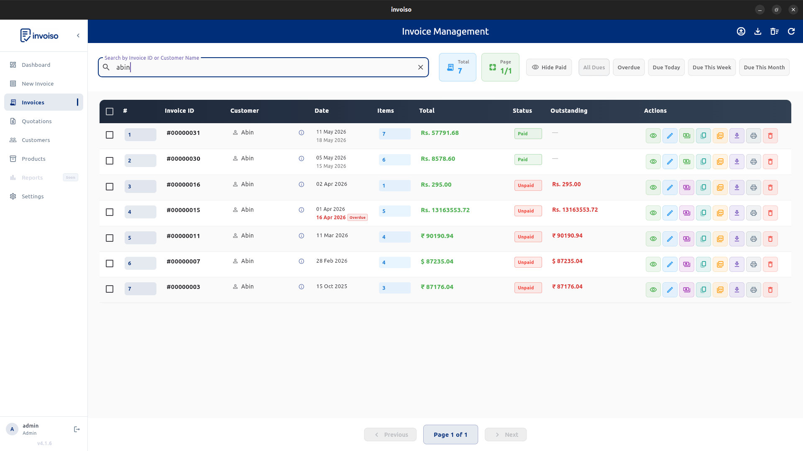

A lot of small businesses use the words "quotation" and "invoice" interchangeably, and then wonder why their books don't reconcile at tax time. They're not the same document, they don't serve the same purpose, and mixing them up — especially by putting a quote through your invoice numbering sequence — creates real problems later. This guide walks through what actually separates a quotation from a tax invoice, when to send each one, and exactly how Invoiso lets you move from an accepted quote to a finished invoice without retyping a single line item.
What a quotation actually is
A quotation is a pre-sale document. It's the price estimate you send a prospective customer before any work has started or any goods have changed hands. Its entire purpose is to communicate what you propose to charge, so the customer can decide whether to go ahead. Because nothing has been sold yet, a quotation is non-binding — the customer can accept it, ask for changes, or walk away, and neither side owes the other anything based on the quote alone.
This matters more than it sounds. A quotation is not a tax document. It doesn't represent a completed transaction, so it has no place in your GST returns, and it shouldn't be treated as part of your books the way a sale is. Some businesses make the mistake of numbering quotations in the same sequence as invoices — Invoice #101, Quotation #102, Invoice #103 — which creates a numbering sequence with gaps and confuses anyone reconciling your invoice trail later, including you. A quotation should live in its own numbering world entirely, separate from your tax invoice sequence.
What a tax invoice actually is
An invoice is issued once a sale has actually happened — the goods have been delivered, or the service has been performed, and the customer now owes you money for it. Unlike a quotation, an invoice is a legal GST document. It carries the fields a quotation doesn't need: GST rates, HSN or SAC codes, your GSTIN, and the customer's GSTIN where applicable. This is the document that feeds your GST returns and your books, and it's what a tax authority, an auditor, or your accountant will actually look at when reconciling your revenue.
Put simply: a quotation asks "would you like to buy this at this price?" An invoice states "you bought this, here is what it cost, and here is the tax on it." One is a conversation starter. The other is a legal record.
Why the distinction actually matters day to day
It's tempting to treat this as a semantic detail, but the practical consequences are real:
- Tax filing accuracy. If a quotation gets mixed into your invoice records, you risk overstating revenue that was never actually earned, since the deal may never have closed.
- Numbering integrity. GST invoice numbering is expected to be sequential and gap-free for the invoices you actually issue. A quotation sitting inside that sequence breaks that expectation for no good reason.
- Customer clarity. A customer who receives a document titled "Invoice" may reasonably assume they now owe you money, even if the deal isn't finalised. Sending a clearly labelled quotation avoids that confusion entirely.
- Reporting sanity. If your invoice list is cluttered with quotes that were never accepted, your reports on paid, unpaid, and outstanding amounts stop being trustworthy at a glance.
None of this requires complicated bookkeeping — it just requires keeping the two document types visibly and structurally separate, which is exactly what Invoiso is built to do.
How Invoiso separates quotations from invoices
When you create a new document in Invoiso, you choose the document type up front — either Invoice or Quotation. This choice has been part of Invoiso since its early versions, so the two document types have always been distinct at the point of creation rather than bolted on afterward.
As of version 4.0.5 (April 2026), quotations got a meaningfully bigger upgrade: a dedicated screen with its own entry in the sidebar navigation, completely separate from the main invoice list. This isn't just a label change — it changes what you see. Because a quotation was never paid in the first place, the Paid/Partial/Unpaid payment-status columns that appear on the invoice list are hidden on the quotations screen. There's no ambiguous "Unpaid" chip sitting next to a document that was never meant to represent a completed sale.

Both document types generate professional PDFs from the same set of PDF templates, so a quotation looks just as polished as the invoice that eventually follows it — there's no visual downgrade for sending an estimate rather than a bill. And because invoices and quotations are tracked in separate lists with colour-coded badges, you can scan either list and instantly tell what you're looking at, without opening each document to check.
Turning a quotation into an invoice, step by step
This is the part that actually saves time. Once a customer accepts a quotation, you don't rebuild the invoice from scratch — you convert the quote directly using the Duplicate button that's available on every invoice and quotation in Invoiso.
- Open the accepted quotation. Find it in the Quotations screen once your customer has confirmed they want to go ahead.
- Click Duplicate. Every document in Invoiso — invoice or quotation — has this button available.
- Choose the target type. When you duplicate a document, Invoiso asks whether the clone should be an Invoice or a Quotation. Pick Invoice.
- Review the pre-filled document. The new invoice opens with the same customer, the same line items, the same tax settings, and the same notes as the original quotation — but with a fresh document ID and today's date.
- Adjust anything that changed. If the customer negotiated a different price, added or dropped a line item, or the quantities shifted since the quote was first sent, update those fields now.
- Save. You now have a ready-to-send tax invoice, built from the quote's contents, without retyping the customer's details or the line items by hand.
This one workflow is the entire bridge between "estimate" and "sale" in Invoiso. It removes the most tedious and error-prone part of converting a quote — manually re-entering everything into a new invoice — while still giving you a clean opportunity to catch anything that changed during negotiation before the document goes out as a legal record.

What carries over, and what you should double-check
When you duplicate a quotation into an invoice, the customer record, every line item, the tax settings applied to those line items, and any notes attached to the original document all carry over automatically. What changes is the document ID — it gets a new one, consistent with your invoice numbering rather than your quotation numbering — and the date, which resets to today.
Because negotiations often shift a little between the quote and the final agreement, it's worth treating the duplicate step as a checkpoint rather than a rubber stamp. Before saving, check that:
- Quantities and prices still match what was actually agreed, not just what was originally quoted.
- Any discount negotiated after the quote was sent is reflected in the new invoice.
- The customer's GST details are current, especially if some time passed between the quote and the confirmed sale.
- The invoice date is correct for when the sale is actually being recorded, since GST invoice timing generally matters for when a sale is reported.
Exporting quotations and invoices separately
If you need your records in a spreadsheet — for your accountant, for a manual reconciliation, or just for your own records — Invoiso's CSV export from the Invoice Management screen is type-aware. It distinguishes between invoices and quotations, and it opens with a date-range filter dialog, so you can export just your invoices for a given period, or just your quotations, without the two getting mixed into a single messy file.
Common mistakes to avoid
A few patterns come up repeatedly with businesses that are new to separating quotations from invoices:
- Sending a "quotation" that's actually formatted like a tax invoice — with GST breakdowns and invoice-style numbering — which can confuse a customer into thinking a sale has already happened.
- Letting quotations pile up unconverted. If a quote is accepted verbally or over email, it's worth converting it to an invoice as soon as the sale is confirmed, rather than weeks later when the details are harder to recall accurately.
- Reusing an old quotation as a template for an unrelated invoice. Duplicating is meant for converting that specific quote into that specific sale — for a different customer or a different deal, start a new document instead.
- Ignoring the numbering sequence. Keeping invoices and quotations in separate number series from day one avoids having to explain gaps in your invoice sequence later.
A note on India-specific GST rules
Terms like "proforma invoice" and specific GST invoice timing requirements can carry particular legal expectations depending on current CBIC guidance, and those rules can change. This guide covers how Invoiso structurally separates quotations from invoices and how to convert one into the other — for the specific legal wording or timing your business needs to comply with under current GST law, it's worth confirming the latest requirements with a tax advisor or the current CBIC guidance rather than relying on general guidance like this.
Why this workflow matters for a small business
Most small businesses don't have a dedicated sales-ops team drawing a hard line between "estimate" and "sale" — the same person is often writing the quote, following up with the customer, and eventually issuing the invoice. Having the software enforce the distinction structurally — separate screens, separate numbering, a payment-status column that only shows up where it's meaningful — removes the burden of remembering to keep them apart manually. And having a one-click path from an accepted quote to a finished invoice means the discipline of separating the two documents doesn't cost you extra typing every time a deal closes.
Invoiso keeps quotations and invoices separate by design, with one-click conversion when a deal closes. Try Invoiso's free GST billing software or download the desktop app.